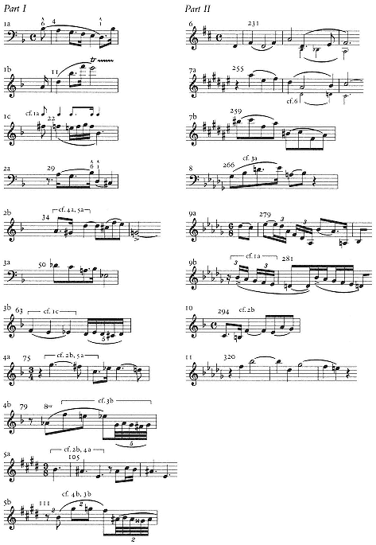
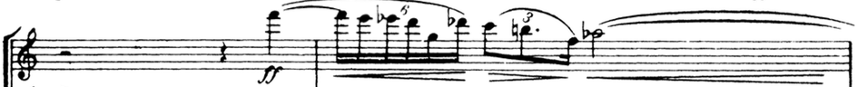
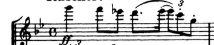

Formal Structure of Schoenberg’s Verklärte Nacht op. 4
Schoenberg early piece such as Verklärte Nacht op. 4, composed in 1899, was under influences of Wagner’s style such as tonal complexity and leitmotif.
This program music is based on a poem from Richard Dehmel, about a couple walking under the moon, and the woman revealed to the man about her pregnancy before they met. And the man opened his arm to love her and her new child. The poem was divided into five sections and has an A-B-A’-C-A’’ form in it’s text.
Even though this piece is program music base on a poem. Schoenberg himself in his articles and letters revealed that this piece can be considered as absolute music. Also, when Schoenberg talked about Verklärte Nacht, he pointed out the technique of leitmotif, harmonic structure, instrumentation, and acoustic effects were influenced by Wagner, however, the style of developing variation in his process of motives were influenced by Brahms.
Former Studies
Besides Schoenberg’s own description and motivic analyze about this piece. It has also been discussed and analyzed for several times. According to a DMA thesis from Kirk Gustafson, major sources of analysis, especially in early twentieth century are romantically descriptions. Among those previous studies, there are two detailed analyses in English provided by Walter Frisch and Richard Swift.
Frisch’s analyse, influenced by Egon Wellesz and Karl Dahlhaus, focused on the relationship of the music form and Dehmel’s poem. Based on the poem and Stravinsky’s analyze, he separated the whole piece into five sections and formed A-B-A’-C-A’’. The length of each A sections, about 28 measures and longer at the end contains one set of motive, are significantly shorter than B and C sections. Furthermore, Frisch not only pointed out the motives Schoenberg used in this piece and it’s relation to the musical form, he also analyzed the relations in between those motives as a gradual variation.
On the other hand, Swift focuses more on the tonal relationship within this piece, alone with the nature of motivic ritornello in this piece, he argued the piece can be analyzed to be a double sonata form. The A section were interpreted to be introductions, transitions and coda. He also pointed out the i-II-i relation in the “Sonata I” and I-III-I tonal relations in “Sonata II”. He further argued the tonal plan for the whole piece would be i-II-III-iv-I, same linear scale element in the beginning of the piece.
The ritornello arrangements and developing variation of motives in this piece made it ambiguous for analyzing. However, in the dimension of overall formal structure and sectioning about Verklärte Nacht, both Frisch and Swift analyze did not reveal too much difference from each other. Even though it might raise an argument being over-interpreted due to the historical background about the definition of “Sonata”, Swift did make a logical observation about how motives are applied and developed in the big “B” and “C” section.
| mm. | Frisch | Swift |
|---|---|---|
| 1 - 28 | A | Introduction |
| 29-187 | B | Sonata I |
| __(29-49) | __Exposition | |
| ___first group | ||
| ____part I | ||
| __(50-62) | ____part II | |
| __(63-104) | ___bridge | |
| __(105-131) | ___second group | |
| __(132-168) | __Developement | |
| ___part I | ||
| __(169-180) | ___part II | |
| __(181-187) | __Recapitulation | |
| __(188-228) | __Transition | |
| 188-228 | A’ | Transition |
| 229-390 | C | Sonata II |
| __(229-243) | __Exposition | |
| ___first group | ||
| __(244-248) | ___bridge | |
| __(249-276) | ___second group | |
| __(277-293) | ___codetta | |
| __(294-309) | __Development | |
| ___part I | ||
| __(310-339) | ___part II | |
| __(340-362) | __Recapitulation | |
| ___first group | ||
| __(363-369) | ___bridge | |
| __(370-391) | A’’ | ___second group |
| 391-418 | Coda |
Observation
In his own article analyzing Verklärt Nacht, Schoenberg has pointed out two major structural anchors: mm. 229 as a breakpoint, and mm. 370 as coda. Acoustically, the overall formal design from the poem can be seen as a d minor to D major transfiguration, based on the mood of “despair - released” in Dehmel’s poem. Therefore the modulation to D major in mm. 229 marks a obvious section point in this piece. In the first section, Schoenberg applied a lot of unstable chords such as sequenced half-diminished, and diminished chords, along with stepwise or chromatic chord progressions to express the mood of instability and despair. In the second section, besides modulating to a major key, more triad and seventh chords are used, chromatic chords is treated conventionally as embellishment chords. The chord progression in the second section tends to be diatonic, besides large amount of pedal points were on the bass line to emphasize stability and assuring, chord progressions tend to be conventional relations.
Based on the motive distribution, tonality and Schoenberg’s indication, this piece can be analyzed as a big A-B-A’-C-A’’ form wrapping a secondary a-b-a in the B section and a-b-a’-c-a’’ in the C section showed in the chart below. The whole piece applied the technique of developing variation from a theme, therefore it can not be strictly categorized in conventional music forms such as rondo or ternary. The theme-development model in this piece is also one of the reason Swift interpret this piece in sonata forms.
| mm. | section |
|---|---|
| 1-49 | A |
| 50-168 | B |
| __(50-99) | __a |
| __(100-123) | __b |
| __(124-168) | __a’ |
| 169-228 | A’ |
| 229-369 | C |
| __(229-248) | __intro |
| __(249-276) | __interlude |
| __(277-293) | __a |
| __(294-309) | __b |
| __(310-319) | __a’ |
| __(320-352) | __c |
| __(353-369) | __a’’ |
| 370-418 | A’’ (coda) |
In Frisch’s book, he has made a detailed analysis into themes and motives in Verklärte Nacht and revealed the relationship in between each themes. Later in this article I will use Frisch’s numbering system to indicate motives.

There are two theme elements has been missed in Frisch’s analyze. The first one is revealed at mm. 138:

This motive can be observed as a variation of embellished motive 4a, therefore I numbered it as 4a’ to fit into Frisch’s numbering system. The whole section from mm. 132-168 was dominated by this motive. Furthermore, 4a’ has been reappeared later from mm. 280 as motive 9a. Therefore we can see in the later section Schoenberg’s apply of ritornello materials.
Another motive is revealed in mm. 169, it is later being applied as bridging theme at mm. 302-310:

This motive can be observe as a combination of motive 1a from it’s downward dotted note. I numbered it as 4a’’ for it first revealed in the 4a’ dominated section.
Motives and Form
For the first A section, even though there is an authentic cadence by mm. 29, the motive 2a and 2b followed after this cadence was never functioned independently from previous group 1a, 1b, and 1c as formal sections. On the other hand, authentic cadences were seldom used as breakpoints in the first section of this piece. Furthermore, Schoenberg has indicated the story of the second stanza as motive 3a. Therefore it makes more sense to consider motive group 1 and 2 to be together. Mm. 50 where a fermata and a key change occurred, would work better as a breakpoint of the first A section instead of mm. 29 suggested by both Frisch and Swift.
With the same reason, the A’ section would be considered from mm. 169, with a major key change and started with an introduction of 4a’’ which is a variation of 1a, followed by motive group 2 and group 1.
The B section can be observed into a-b-a’ subsections. The middle sub-section occurs at mm. 100-123 in E major, with motive group 5 exclusively running. Group 3 and 4 on the other hand are running both a and a’ subsection.
We can also find a-b-a’-c-a’’ subsections in section C. The a subsection occurred at mm. 277-290, mm. 312-319, mm. 353-359 where motive group 9 is the major material. The b and c subsections on the other hand is functioning to expose motive group 10 and 11. Before this small rondo from mm. 229-276 can be observed into two subsections. From mm. 249 to mm. 276 is an independent section where Schoenberg indicated applying overtones of strings to “express the beauty of moonlight”. This section is independent from other subsections and never revealed in this section again, therefore it can be observed as an interlude. From mm. 229 too mm. 248 on the other hand, the motive 6 “man’s theme” is functioned later as connecting material from c subsection back to a’’ subsection. Therefore the sub section can be indicated as an introduction to this section.
Schoenberg applied a “farewell” technique in the coda section from mm. 370. Besides recap of motive group 1, motives from other sections also reveals to summarize the whole piece.
Conclusion
The developing motive variation technique and fractal essence of formal design in Schoenberg’s Verklärte Nacht makes it difficult to define a consensual formal analysis among music theorists. The formal ambiguity allows it’s audiences to perceive the music in different dimensions, or concentrate on the mood composer provided for the poem.
Even though Schoenberg has mentioned this piece can be appreciated as absolute music, the letimotiv, development, and the tonal scheme of this piece has shown lots of identifications to a program music.
Comparing to Schoenberg’s piece with Dehmel’s poem, the A stanza in Dehmel’s poem is shortened each time it reoccurs, but it becomes longer in Schoenberg’s music. Maybe Schoenberg has considered the emotion of the poem required a longer time to process or summarize. Furthermore, the “moonlight” in the interlude subsection is not clear in the poem however Schoenberg applied lots of acoustic effects to express the beauty, it indicates Schoenberg has not following the structure of the poem literally but composing based on the feeling he has for this poem.
Bibliography
Bailey, Walter Boyce. Programmatic Elements in the Works of Schoenberg. 1984.
Frisch, Walter. The Early Works of Arnold Schoenberg, 1893-1908. Univ of California Press, 1997.
Gustafson, Kirk Edward. “Schoenberg’s “Verklärte Nacht”: History, Editions and Analyses.” N.p., 1989.
Schoenberg, Arnold. “Programm-Anmerkungen zu Verklärte Nacht” Gesammelte Schriften I: Stil und Gedanke, Aufsätze zur Musik. S. Fischer, 1950
Swift, Richard. “1/XII/99: Tonal Relations in Schoenberg’s“ Verklärte Nacht”.” 19th-Century Music 1.1 (1977): 3–14.